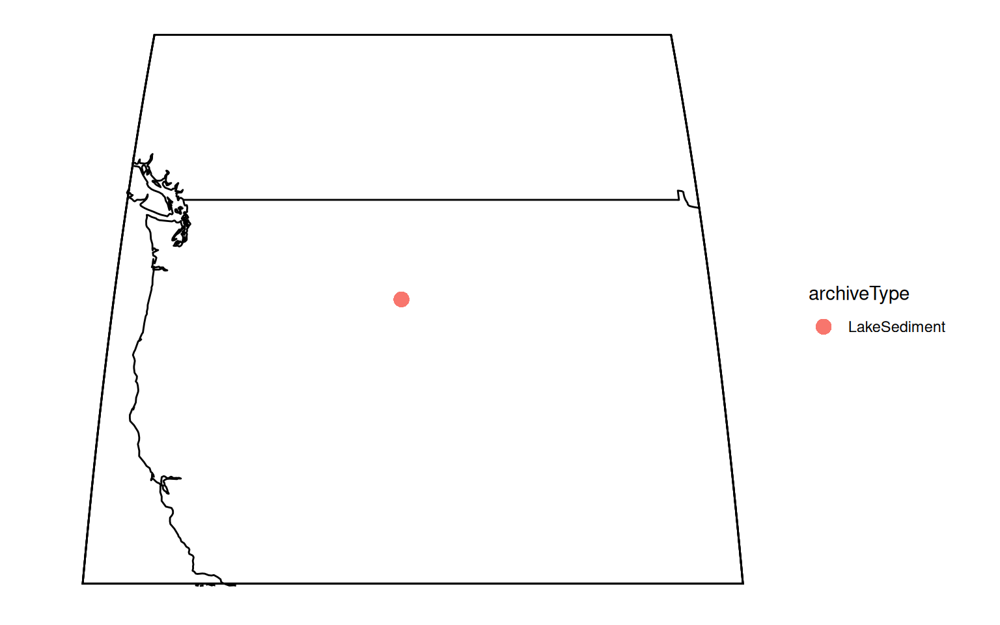
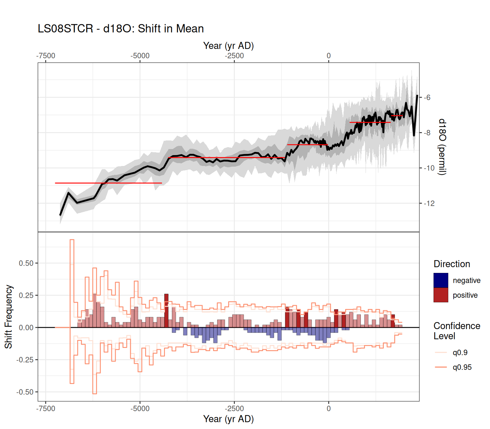
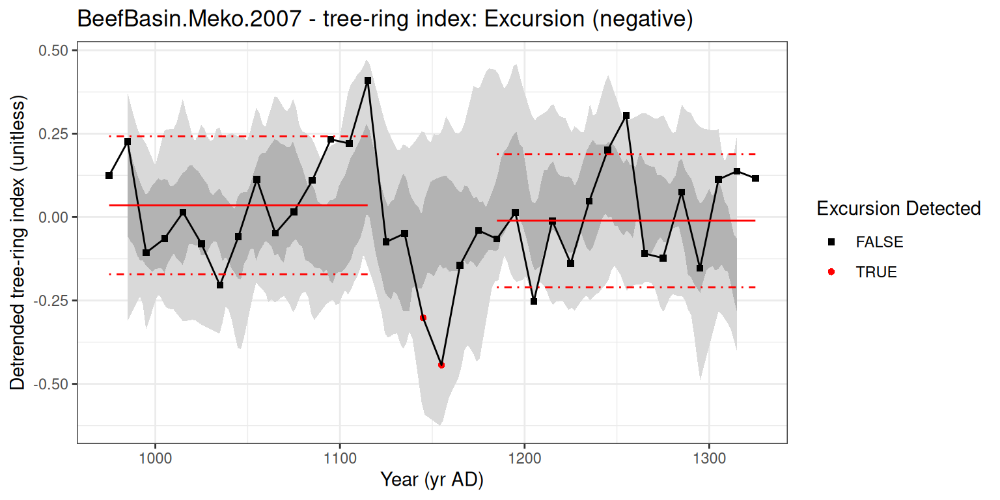
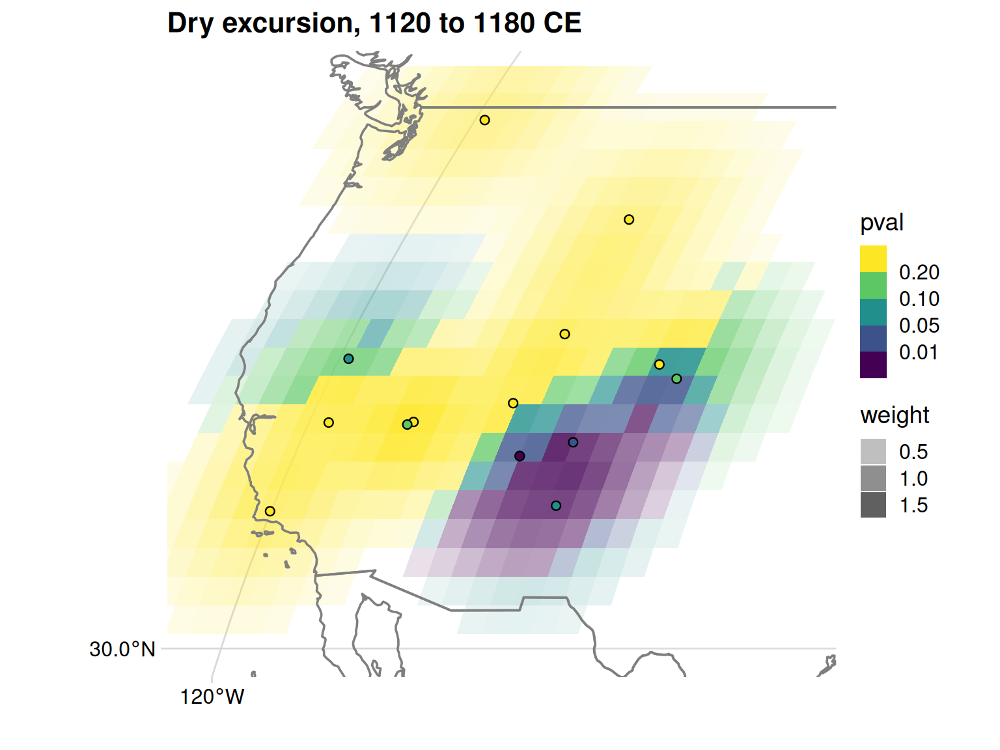

library(actR)
library(dplyr)
library(ggplot2)
source(here::here("R/helpers.R"))
checkVersions()
options(cli.progress_show_after = Inf) # hide progress bars in the rendered page
h2k <- h2kTimeseries()4. Detecting abrupt change with actR
Shifts, excursions, and a regional drought test
actR (Abrupt Change Toolkit in R) can ask two kinds of questions of paleoclimate records:
- Shifts: where does the mean of a record change, and are those changes larger than you would expect by chance? (
detectShift()) - Excursions: did the record depart from its baseline during a particular time window, for example a known drought or cold event? (
detectExcursion())
actR will propagate uncertainty in the ages and the values with ensembles, and test results against null hypotheses: many surrogate series with the same spectral properties as the real record but no events. A result is significant if the real record shows the change more often than the surrogates do.
We’ll stay in western North America (AR6 region WNA) and:
- look for shifts in the Crevice Lake record from tutorial 3,
- test one record for an excursion during the mid-1100s drought, which stood out in the tutorial 2 composite, and
- test every WNA moisture record for that drought, and combine the results into a regional significance map.
Setup
Shifts in a single record
Crevice Lake (Yellowstone) d18O covers the last 9,000 years. Larger d18O values mean less streamflow, so a step up means a shift to drier conditions.
crevice <- h2k |>
filter(dataSetName == "LS08STCR", paleoData_variableName == "d18O")
lipdViz::mapTs(crevice, size = 4, lat.range = c(35, 55), lon.range = c(-125, -95))
detectShift() looks for changes in the mean with a changepoint algorithm (method = "PELT", from the changepoint package), on every member of an ensemble:
simulate.time.uncertaintyandsimulate.paleo.uncertaintybuild the ensemble by perturbing the ages and the values (paleo.uncertainty, in permil here).minimum.segment.lengthis the shortest stretch of time, in years, that counts as a segment. This sets the timescale of the shifts you can find.null.hypothesis.nis the number of surrogate series used to judge significance.
actR reads each record’s time and its metadata (see tutorial 1). time.units puts the axis on a chosen scale, here years CE, so that the results are in years CE whatever the record’s own units.
set.seed(4)
shifts <- detectShift(crevice,
time.units = "CE",
vals.variable.name = "d18O",
method = "PELT",
minimum.segment.length = 500,
simulate.time.uncertainty = TRUE,
simulate.paleo.uncertainty = TRUE,
paleo.uncertainty = 0.3,
n.ens = 50,
null.hypothesis.n = 50)Keep n.ens and null.hypothesis.n small while you explore (50 here), and use several hundred for results you’ll report.
summary() lists the shifts that are significant at the 0.05 level:
summary(shifts)LS08STCR - d18O: Shift in Mean results
Searched for Shift in Mean with a minimum segment length of 500 years, summarizing the results over windows of 100 years (yr AD).
Overall result: Detected 3 Shift in Mean event(s) that were significant at the alpha < 0.05 level
# A tibble: 3 × 4
time_start time_end pvalue deltas
<dbl> <dbl> <dbl> <dbl>
1 -852 -752 0 1.03
2 -4352 -4252 0.0200 0.995
3 148 248 0.0400 1.60
Time uncertainty considered? TRUE Time ensemble generated in `propagateUncertainties()`)
Paleo uncertainty considered? TRUE Values ensemble generated in `propagateUncertainties()`)
Error propagation ensemble members = 50
Null hypothesis testing ensemble members = 50
Members simulated using isospectral method
Parameter choices:
cpt.fun = changepoint::cpt.mean
minimum.segment.length = 500
method = PELT
penalty = MBIC
ncpts.max = Infplot() shows the record and its ensemble (top) and, in each time bin, the fraction of ensemble members with a shift there (bottom). Bars beyond the orange lines (the 90th and 95th percentiles of the surrogates) are significant, and are drawn darker.
shift_plot <- plot(shifts) # plot() draws the figure; assigning it avoids drawing it twice
All three significant shifts are positive (the deltas column, younger minus older segment means): steps up in d18O, toward drier conditions. They are part of a long-term drying trend at Crevice Lake through the Holocene.
TipUsing a real age ensemble
Here actR simulated age uncertainty. If you built an age ensemble in tutorial 3, put it in an ageEnsemble (yr BP) or yearEnsemble column of the tibble, and actR will use it instead.
An excursion in one record
The tutorial 2 composite has a pronounced dry spell in the mid-1100s. Did a given record depart from its baseline then?
detectExcursion() compares an event window with reference windows on either side. An excursion is n.consecutive points in the event window beyond sig.num standard deviations from the reference mean.
First, prepare the records. As in tutorial 2, choose the WNA moisture records and use compositeR::interpDirectionSign() to flip each one so that larger values mean wetter. That way a negative excursion always means drier.
recs <- h2k |>
filter(ar6_region == "WNA", isMoisture(interpretation1_variable)) |>
mutate(direction = purrr::map_dbl(seq_len(n()), \(i) compositeR::interpDirectionSign(pick(everything())[i, ]))) |>
filter(!is.na(direction)) |>
distinct(dataSetName, .keep_all = TRUE) |>
clipTime(850, 1450) |>
mutate(paleoData_values = purrr::map2(paleoData_values, direction, `*`))Tree rings are annual and lake records are often decadal or coarser. In annual data, year-to-year variability is large compared with a multi-decade drought, and an excursion test on the raw series mostly measures that noise. So we average every record into 10-year bins with ens::bin(), which also puts trees and lakes on a comparable footing. time now holds the bin centers, so we set timeVariableName to "time", telling lipdR that time is its own source and not a copy of year or age (see tutorial 1):
binvec <- seq(850, 1450, by = 10)
decadal <- function(time, vals) {
b <- ens::bin(time, vals, bin.vec = binvec)
b[is.finite(b[, 2]), , drop = FALSE]
}
binned <- purrr::map2(recs$time, recs$paleoData_values, decadal)
recs <- recs |>
mutate(time = purrr::map(binned, \(b) b[, 1]),
paleoData_values = purrr::map(binned, \(b) b[, 2]),
timeVariableName = "time") |>
filter(purrr::map_int(paleoData_values, length) >= 30) # at least 300 years of decades
nrow(recs)[1] 19Now test one record, the Beef Basin tree-ring streamflow reconstruction (Meko et al., 2007). The event window is 1120 to 1180 CE (event.yr = 1150, event.window = 60), and the reference windows are the 150 years on each side.
beef <- filter(recs, dataSetName == "BeefBasin.Meko.2007")
set.seed(4)
exc <- detectExcursion(beef,
time.units = "CE",
event.yr = 1150,
event.window = 60,
ref.window = 150,
exc.type = "negative",
sig.num = 1.5,
n.consecutive = 2,
min.vals = 5,
simulate.time.uncertainty = FALSE,
simulate.paleo.uncertainty = TRUE,
paleo.uncertainty = 0.2,
n.ens = 50,
null.hypothesis.n = 50)summary(exc)BeefBasin.Meko.2007 - tree-ring index: Excursion test results
Searched for negative excursions in a 60 years window around 1150 yr AD, with reference windows of 150 years on either side.
Overall result: Empirical p-value = 0
Time uncertainty considered? FALSE
Paleo uncertainty considered? TRUE
Parametric uncertainty considered? FALSE
Error propagation ensemble members = 50
Null hypothesis testing ensemble members = 50
Parameter choices:
sig.num = 1.5
n.consecutive = 2
exc.type = negative
min.vals = 5
na.rm = TRUEplot(exc)
The red lines are the reference means and the thresholds (sig.num standard deviations). Points beyond the threshold in the event window count toward an excursion. event_probability is the fraction of ensemble members with an excursion, and the p-value compares it with the surrogates.
We don’t simulate age uncertainty here, since tree rings are precisely dated. For a lake or speleothem record, set simulate.time.uncertainty = TRUE or supply an age ensemble.
NoteChoosing the windows
min.vals is the fewest points needed in each window. With decadal bins, a 60-year event window holds 6 points; a 40-year window holds only 4 and wouldn’t be tested at min.vals = 5. sig.num, n.consecutive and the windows can also be given as vectors, one value per ensemble member (e.g. sig.num = rnorm(50, 1.5, 0.1)), so that the choice of parameters becomes part of the uncertainty.
The same test across the region
Run the same test on every record. split() turns the tibble into a list of one-row tibbles, and purrr::map() runs detectExcursion() on each. Records with too few points in the windows return no p-value.
set.seed(4)
events <- recs |>
split(seq_len(nrow(recs))) |>
purrr::map(\(r) detectExcursion(r,
time.units = "CE",
event.yr = 1150,
event.window = 60,
ref.window = 150,
exc.type = "negative",
sig.num = 1.5,
n.consecutive = 2,
min.vals = 5,
simulate.time.uncertainty = FALSE,
simulate.paleo.uncertainty = TRUE,
paleo.uncertainty = 0.2,
n.ens = 50,
null.hypothesis.n = 50)) |>
purrr::list_rbind() |>
filter(!is.na(pvalue))events |>
as.data.frame() |>
select(dataSetName, archiveType, event_probability, pvalue) |>
arrange(pvalue)Individually, only a few records are significant. Many records weakly pointing the same way can still add up to strong evidence, and that’s what the next step tests.
A regional significance map
spatialSigTest() combines the records near each point on a grid. It weights each record by its distance (zero beyond distance.cutoff), adds up their event probabilities, and compares the sum with the same sum for the surrogates (agg.method = "robustNull"). distanceGrid() sets up the grid and the distances.
lon.range <- c(-126, -100)
lat.range <- c(30, 50)
grid <- distanceGrid(events, lon.range = lon.range, lat.range = lat.range, grid.resolution = 1)
pval_grid <- purrr::map(grid,
spatialSigTest,
events = events,
agg.method = "robustNull",
use.weights = TRUE,
distance.cutoff = 500)plotSignificance() maps the result. It returns a list, and the map is in $plot. Grid cells show the regional p-value for a negative (dry) excursion, more transparent where fewer records are nearby; points show each record’s own p-value.
sig <- plotSignificance(pval_grid,
sigTestResults = events,
which.test = "pvalNeg",
color.breaks = c(0.01, 0.05, 0.1, 0.2),
restrict.sites = TRUE,
alpha.by.weight = TRUE,
cutoff.distance = 500,
x.lim = lon.range,
y.lim = lat.range)
sig$plot +
ggtitle("Dry excursion, 1120 to 1180 CE") +
theme(plot.background = element_rect(fill = "white", colour = NA))
The mid-1100s drought is significant across the Colorado Plateau and the Four Corners, where several tree-ring records agree, but not in the north or along the coast.
Try this
- Test the late-1500s megadrought:
event.yr = 1585, withclipTime()andbinvecadjusted to cover 1400 to 1800. - Use
exc.type = "positive"to look for wet excursions, or"either". - Change
distance.cutoffinspatialSigTest(). How sensitive is the map? - Give
sig.numandn.consecutiveas vectors (one value per ensemble member) so that the parameter choices become part of the uncertainty. - Run
detectShift()on the tutorial 2 composite median, or on another long record such as Leviathan Cave (Leviathan.Lachniet.2014).